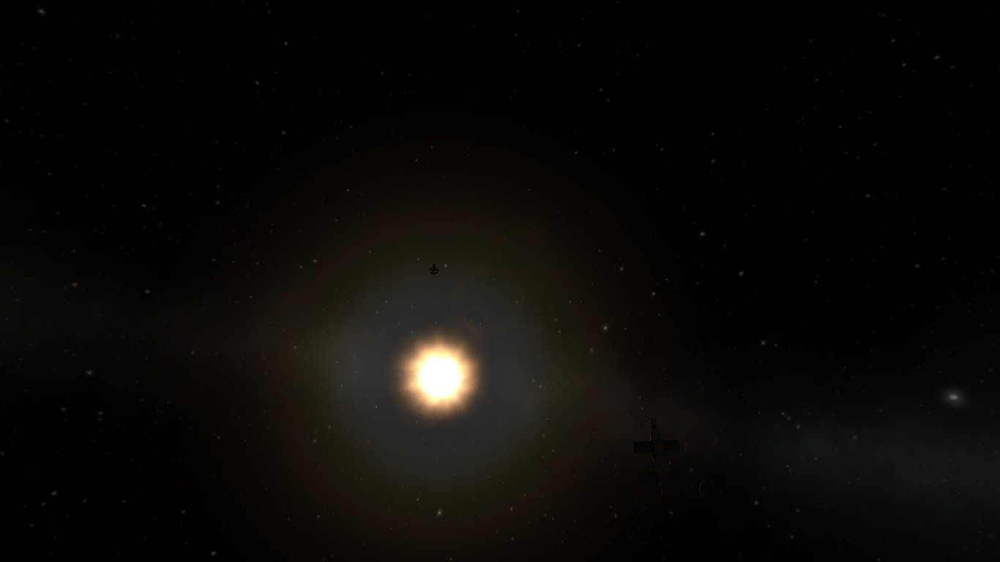

The KSPedia Online
Tips for interplanetary travel
Interplanetary travel is the next step in your plan to take over the galaxy… wait wrong game. Interplanetary travel is an important factor in your plan to visit every planet in kerbol (the galaxy the kerbal’s live in). Interplanetary travel requires a large amount of knowledge about orbiting, mainly how to set up encounters with other planets.

Depending on what planet you intend to land on you it requires specific build vehicles.
Planets with atmosphere require parachutes but lower density atmospheres require more parachutes. Planets with dense atmospheres can allow you to even fly a plane, the only downside is that it requires a heavier lifting stages to get back into orbit.
You can find more infomation on this under the tips for planet and moon landing section.
Interplanetary traveling rockets need a continuous conection to the KSC. This can be done by having powerful antenna but still has limited range. Having relay stations are better as you can direct the connection around a planet instead of through meaning you can get in infinite KSC connection.
